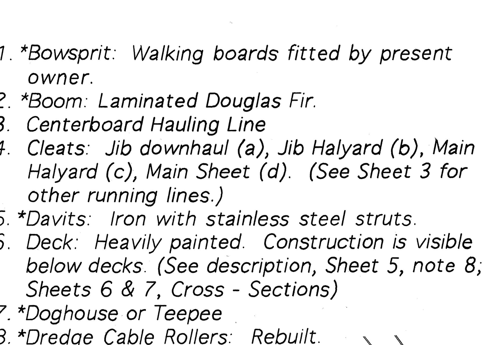

Original scan pixels: [10954, 602, 13467, 2358]; source SHA-256: 26613443160fe74ec23712f68d934a4e5e39086e7aed33f81e43dee582ec8fd4.
Native lossless view · Raw OCR · Word coordinates/confidence · Manifest

|. *Bowsprit: Walking boards fitted by present owner. ? *Boom: Laminated Douglas Fir. 3. Centerboard Hauling Line +. Cleats: Jib downhaul (a), Jib Halyard (b), Main Halyard (c), Main Sheet (d). (See Sheet 3 for other running lines.) 9. *Davits: Iron with stainless steel struts. 9. Deck: Heavily painted. Construction is visible below decks. (See description, Sheet 5, note 8; Sheets 6 & 7, Cross - Sections) ’.*Doghouse or [eepee — 3. *Nredge Cable Rollers: Rebuilt. 9. x